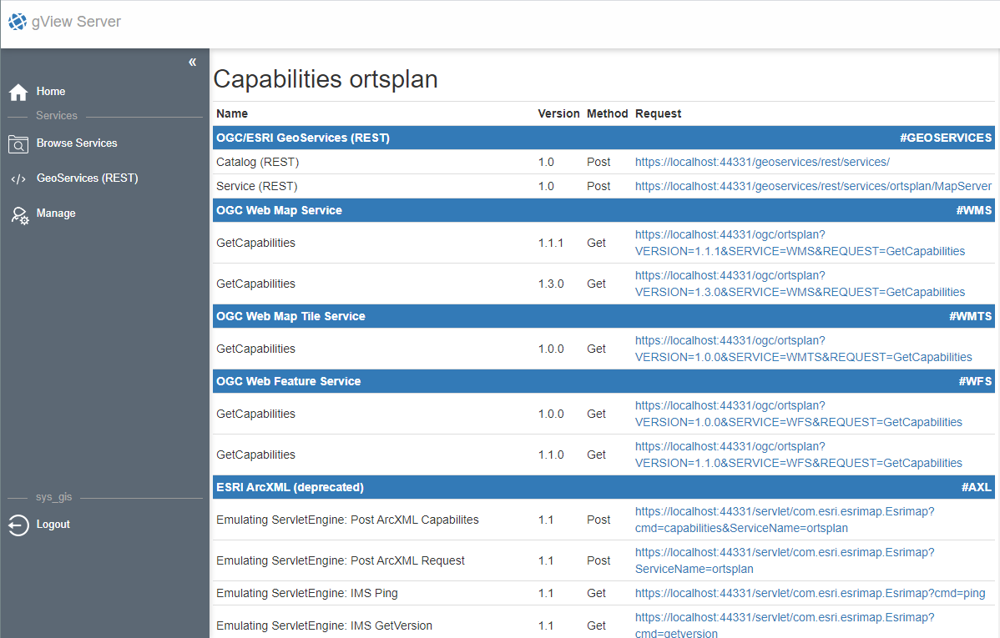
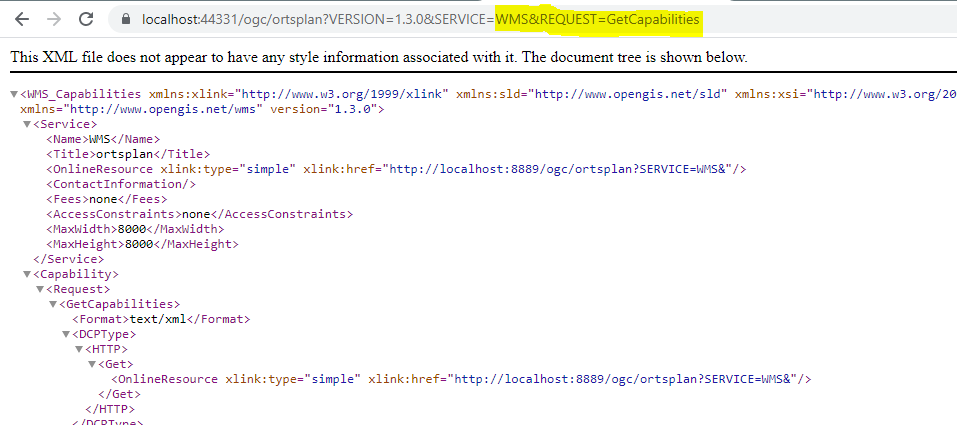

Browse Services¶
In diesem Abschnitt wird gezeigt, wie gView MapServer Dienste und Verzeichnisse in der
Web-Oberfläche aufgelistet werden. Zum Auflisten der Dienste steht der Menüpunkt Browse Services
zur Verfügung (Kachel auf der Startseite bzw. Sidebar):
Die Startansicht bei Browse Service sieht in etwa folgendermaßen aus:
Fett gedruckt werden hier Folder (Verzeichnisse) angezeigt. Dienste werden mit normaler Schrift angezeigt. Außerdem besteht bei Diensten auch die Möglichkeit, sie über das Papierkorb-Symbol zu löschen. Dieses wird nur angezeigt, wenn der angemeldete Benutzer/Client dazu berechtigt ist.
Bemerkung
Browse Services ist für jeden User möglich (auch ohne Anmeldung). Es werden allerdings nur
jene Dienste aufgelistet, für die der aktuelle Anwender berechtigt ist.
Bemerkung
In diesem Beispiel ist immer noch der Administrator angemeldet. Daher stehen auch noch die
Optionen Publish Service und Create Folder zur Verfügung. Die Vorgehensweise für das
Veröffentlichen wird unter Karten als gView Server Dienst veröffentlichen im Abschnitt Anleitungen (Tutorials)
behandelt.
Bemerkung
In diesem Beispiel liegt der Dienst ortsplan nicht in einem Verzeichnis, sondern im
sogenannten root Bereich. In der Praxis sollten Dienste immer in Verzeichnissen organisiert
werden!
Klickt man auf einen Dienst in dieser Ansicht, werden alle möglichen Schnittstellen für diesen Dienst angezeigt:
Für jede dieser Schnittstellen werden Links angeboten, mit denen diese Dienste in diverse GIS-Programme eingebunden werden können. Klickt man beispielsweise auf einen Link für WMS, wird im Browser der Capabilities Request für diesen Dienst angezeigt:
Dieser Link könnte beispielsweise auch in QGIS als WMS Layer eingebunden werden.
Welche Schnittstellen hier angeboten werden, kann über die Manage Web-Oberfläche bei den Berechtigungen für den Dienst oder für das Verzeichnis festgelegt werden.